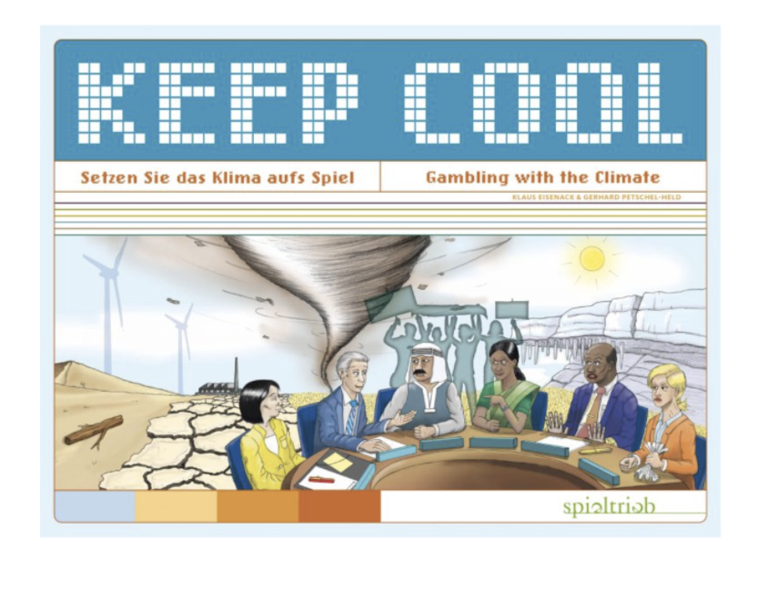
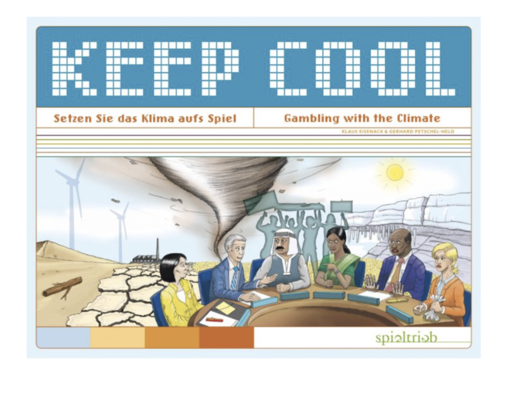

A project using persuasive design principles embedded in a game that helps players bring about an attitude change.
Problem: How can we make users more mindful of their natural resource consumption and help bring about an implicit attitude change in them with regards to their consumption of these resources?
Solution: After Us a narrative fiction game embedded with persuasive game design principles that helps the user bring about an attitude change without the user being explicitly aware of it. Play the final version of the game below!


For our research, we first began with a literature review. We read research papers on games using embedded persuasive design principles. We learned about different ways of embedding the intended goal using obfuscating, intermixing and distancing.
 


We explored the principles of narrative transportation whereby a reader or player is deeply immersed or “lost” in a story, to the point that they begin to reflect the attitudes and intent of the author and story. Another principle of game design we looked into was experience taking where the player assumes the identity of a character in a narrative such that the character's thoughts, emotions, behaviors, goals, and traits become their own. And lastly, we read about the principle of cognitive dissonance which states that people experience negative arousal when they act or think inconsistently with their existing attitudes, and are strongly motivated to reduce this discomfort.
We came across some of these principles while playing the game ‘Gone Home’ which we played together, to better understand the genre of narrative fiction and immersive games and get more in depth knowledge of its game design.
Some of the key insights we generated from this research was:
This research served as the primary starting point for our ideation and game design process. The plot, characters, and elements were each initially developed and then later iterated on to better fit the findings of these studies and theories.
To start off our ideation process, we did a whiteboarding activity to brainstorm ideas for different categories. We reached a consensus on what sort of feeling our experience would have on our intended audience, the format of our experience and what the content and story would be like.
Next, we each decided to come up with potential scenarios for the storyline and narrowed down on one based in a dystopian future which takes place in a house/lab like setting. We did a brainstorming activity to map out the plot of the experience and how we wanted to incorporate different elements other than the ones that added towards our persuasive goal. We mapped out major events that happen in this dystopian future which lead to the scenes that the players encounter while playing this game. This activity was immensely helpful in enabling us to start the design process for the different elements in the game and gave us more clarity on the trajectory going ahead.

My teammate Margot and I were primarily responsible for the design of the elements in the game as well as constructing the scene as a whole for the players. We designed the game such that it can be played on a web based browser with an approximate play time of 30 minutes, but the play time also entirely depends on how much the player intends to explore.
Our initial prototype was a paper-based version of the gameplay and we used this prototype to test the persuasive element and the general idea of the game. After a series of iterations, Ekta created the interactions for the interactive embedded computer game version with the main goal of persuading users to change their attitudes, with the hope of eventually inspiring an adjustment in behavior as well.
During the experience, the player goes through the lobby, the kitchen, the bathroom, and the workspace in no particular order. The rooftop and the lab are locked, hinting that the player is supposed to find the key or some clue leading to the rooms. Each room has multiple artifacts to explore, some of which are present for intermixing purposes. Here is a look at what our paper prototype and higher fidelity version of the artifacts and elements look like!

For the first user testing session we used a paper prototype version of our game using stickers on it to indicate clickable elements and a post-it with the artifact described to the user once they clicked on the sticker. We observed that in our first user testing session the player liked the sub-plots that they discovered along the way about the humans inhabiting the space they were exploring but they did not connect with the persona of the external visitor exploring the space itself and did not have enough motivation to do so. They also felt that the end of the game was anticlimactic as it was not adequately supplemented with more information and there were many gaps in the storyline along the way that didn’t quite make the end comprehensive.

Before our next user test we iterated on the prototype and filled in the gaps in the storyline by introducing diary entries. These diary entries would either be triggered by entering a room or clicking on a specific artifact which gave the user more context about the artifact or the room that they were looking at. This helped in justifying the end overall and making it less anticlimactic. From the next user test, we discovered other pain points such as how the actual persuasive goal was revealed very early on which made the goal seem less embedded into the game. We also came across how the players were unclear about what their identity was and what role they played in this overarching story. And overall the game wasn’t persuasive enough for the users to bring about an attitudinal/behavioural change in the user.
Some of the key insights we generated from this
From the feedback we received from these user tests we developed the final version of our game which consisted of an onboarding sequence which established the player as part of an intergalactic spaceship mission landing on Earth 30 years in the future. The initial goal of the player was to explore the closed space they landed in and piece together information that they found to understand what led to that future.


As part of our final deliverable, we had to present a demo of our project to our class. We set up different laptops with the interactive version of the game loaded as well as used a bigger screen to display one of players playing through the game in real time.
Currently to enable audio/voice command in the game, the user will have to sign in to their Adobe cloud account, however, for future scope we would like to implement a web based version of this application that was free of this dependency on Adobe cloud. We would also like to add background sounds and music as they could be effective in creating an immersive experience for the user.